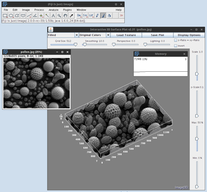

Fiji
Dieser Artikel wurde für die folgenden Ubuntu-Versionen getestet:
Ubuntu 16.04 Xenial Xerus
Ubuntu 14.04 Trusty Tahr
Zum Verständnis dieses Artikels sind folgende Seiten hilfreich:
Fiji  (Fiji Is Just ImageJ) ist ein freies und quelloffenes Bildbearbeitungsprogramm, das die Entwickler selber als Distribution von Plugins und Menüstrukturen für die umfangreiche Java-Bildbearbeitungsbibliothek ImageJ bezeichnen. Programm und Bibliothek werden vorwiegend entwickelt für Analyse, Auswertung und Visualisierung von Rasterdaten in der biowissenschaftlichen Forschung (bspw. Mikroskopieaufnahmen), bieten aber auch grundlegende Funktionen und interessante Plugins für die allgemeine Bildbearbeitung sowie eine Unterstützung für eine Vielzahl von Rastergrafikformaten.
(Fiji Is Just ImageJ) ist ein freies und quelloffenes Bildbearbeitungsprogramm, das die Entwickler selber als Distribution von Plugins und Menüstrukturen für die umfangreiche Java-Bildbearbeitungsbibliothek ImageJ bezeichnen. Programm und Bibliothek werden vorwiegend entwickelt für Analyse, Auswertung und Visualisierung von Rasterdaten in der biowissenschaftlichen Forschung (bspw. Mikroskopieaufnahmen), bieten aber auch grundlegende Funktionen und interessante Plugins für die allgemeine Bildbearbeitung sowie eine Unterstützung für eine Vielzahl von Rastergrafikformaten.
Fiji selber ist unter GPL3  und ImageJ unter BSD2 lizensiert, die Plugins jeweils unter einer eigenen Lizenz .
und ImageJ unter BSD2 lizensiert, die Plugins jeweils unter einer eigenen Lizenz .
Derzeit gibt es das Programm nur in englischer Sprache.
Installation¶
 Fiji ist nicht in den offiziellen Paketquellen enthalten und die Entwickler bieten inzwischen auch keine eigenen Debian-Pakete mehr an. Die manuelle Installation ist allerdings nicht besonders aufwendig.
Fiji ist nicht in den offiziellen Paketquellen enthalten und die Entwickler bieten inzwischen auch keine eigenen Debian-Pakete mehr an. Die manuelle Installation ist allerdings nicht besonders aufwendig.
Manuell¶
Auf der Downloadseite  wird Fiji für Linux in komprimierten ZIP-Archiven (ca. 250 MiB) entweder als 32- oder 64-Bit-Version angeboten, die bereits mit einer eigenen Java-Laufzeitumgebung (JRE) gebündelt sind. Das garantiert die bestmögliche Kompatibilität und erlaubt einen portablen Einsatz. Verwendet wird die Version der Java-Laufzeitumgebung ausschließlich mit Fiji.
wird Fiji für Linux in komprimierten ZIP-Archiven (ca. 250 MiB) entweder als 32- oder 64-Bit-Version angeboten, die bereits mit einer eigenen Java-Laufzeitumgebung (JRE) gebündelt sind. Das garantiert die bestmögliche Kompatibilität und erlaubt einen portablen Einsatz. Verwendet wird die Version der Java-Laufzeitumgebung ausschließlich mit Fiji.
Wer das systemweit installierte Java verwenden möchte, kann die Version No JRE (ca. 210 MiB) herunterladen. Das Programm sollte problemlos mit OpenJDK sowie Oracle Java laufen und benötigt dafür mindestens Java 6 (Version 1.6.0 oder neuer) der Laufzeitumgebung.
In beiden Fällen muss das heruntergeladene ZIP-Archiv lediglich entpackt [1] werden. Anschließend kann Fiji über das entsprechende Skript im entpackten Verzeichnis gestartet [2] werden:
./ImageJ-linux32 # 32-Bit-Version ./ImageJ-linux64 # 64-Bit-Version
Siehe auch die projekteigenen Installationsanweisungen .
Programmstarter¶
Über den Menüpunkt "Plugins → Utilities → Create Desktop Icon" wird eine .desktop-Datei als Desktop-Verknüpfung anlegt. Für einen Eintrag im Start- oder Anwendungsmenü kopiert man diese Datei in das Verzeichnis ~/.local/share/applications/ im Homeverzeichnis. Anschließend kann man Fiji entweder über den Namen oder im Anwendungsmenü unter dem Eintrag "Bildung → Fiji Is Just ImageJ" aufrufen.
Aktualisierung¶
Fiji verfügt über eine automatische Aktualisierung, die in gewissen Zeitabständen beim Programmstart oder bei Bedarf manuell über den Menüpunkt "Help → Update …" ausgeführt wird.
Einstellungen¶
Über "Edit → Options" kann über einzelne Menüpunkte auf verschiedene Programmeinstellungen und Voreinstellungen für Werkzeuge zugegriffen werden. Unter "Edit → Options → Look and Feel …" kann ein anderes Oberflächenthema ausgewählt werden, das nach einem Neustart des Programms übernommen wird. Auf eine neue, allerdings noch experimentelle Programmoberfläche kann man über "Help → Switch to Modern Mode" wechseln.
Benutzung¶
|  |
| Fiji mit 3D-Plot einer Mikroskopaufnahme und Arbeitspeicherüberwachung |
Fiji startet in ein einfaches Hauptfenster aus Menü-, Werkzeug- und Statusleiste und lässt sich mit der Maus ebenso wie über Tastenkürzel bedienen, die hinter den Menüpunkten angegeben werden.
Alle weiteren Dialoge für Werkzeuge und Bilder öffnen als eigenes Fenster und lassen sich frei verschieben. Unter dem Menüpunkt "Window" finden sich neben der Auflistung der geöffneten Bildfenster auch einige Funktionen, die beim Anordnen der Fenster unterstützen sollen. So kann man alle Fenster über "Window → Tile" nebeneinander und über "Window → Cascade" versetzt übereinander anordnen.
Unter dem Menüpunkt "Plugins → Utilities" finden sich einige zusätzliche Werkzeuge bspw. zur Überwachung der Arbeitsspeicherauslastung des Programms.
Die Benutzung des Programms im Detail zu erläutern würde den Umfang dieses Artikels in jeder Hinsicht sprengen. Deswegen sei an dieser Stelle auf die umfassende Dokumentation und die Tutorials verwiesen, die neben den Programmfunktionen auch allgemeine, technische Informationen zur Bildbearbeitung erläutern.
Plugins, Makros, Skripte¶
Fiji integriert bereits eine Vielzahl verfügbarer Erweiterungen für ImageJ und bietet auch die Möglichkeit weitere aus anderer Quelle über den Menüpunkt "Plugins → Install Plugin …" hinzuzufügen. Zusätzlich stehen über den Menüpunkt "Plugins → New" auch Werkzeuge zum Entwickeln eigener Erweiterungen in Java oder JavaScript zur Verfügung. Allerdings ist ein notwendiger Java-Compiler derzeit nicht implementiert.
Mehr dazu findet sich auf der Projektseite unter Plugins .
Problembehebung¶
Speicherzugriffsfehler¶
Mit aktuellen Kernel-Versionen bricht der Start von Fiji unter Umständen mit einem Speicherzugriffsfehler (Segmentation Fault) ab. Siehe auch Issue #170 und das zugehörige Thema im ImageJ-Forum . Problemlösung ist ein zusätzliches Argument beim Programmaufruf:
./ImageJ-linux32 --system # 32-Bit-Version ./ImageJ-linux64 --system # 64-Bit-Version
Der Programmstarter muss dafür ebenfalls angepasst werden.
32-Bit-Version:
1 2 | -Exec=/Pfad/zu/Fiji.app/ImageJ-linux32 %F +Exec=/Pfad/zu/Fiji.app/ImageJ-linux32 --system %F |
64-Bit-Version:
1 2 | -Exec=/Pfad/zu/Fiji.app/ImageJ-linux64 %F +Exec=/Pfad/zu/Fiji.app/ImageJ-linux64 --system %F |
Die Zeile mir TryExec kann ignoriert oder auskommentiert werden.
- Erstellt mit Inyoka
-
 2004 – 2017 ubuntuusers.de • Einige Rechte vorbehalten
2004 – 2017 ubuntuusers.de • Einige Rechte vorbehalten
Lizenz • Kontakt • Datenschutz • Impressum • Serverstatus -
Serverhousing gespendet von